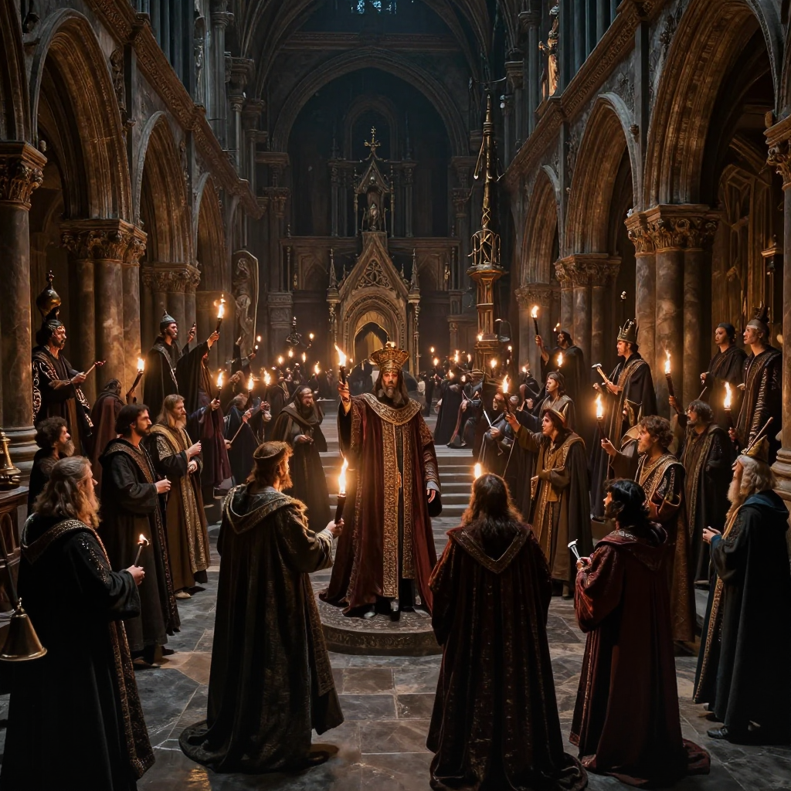
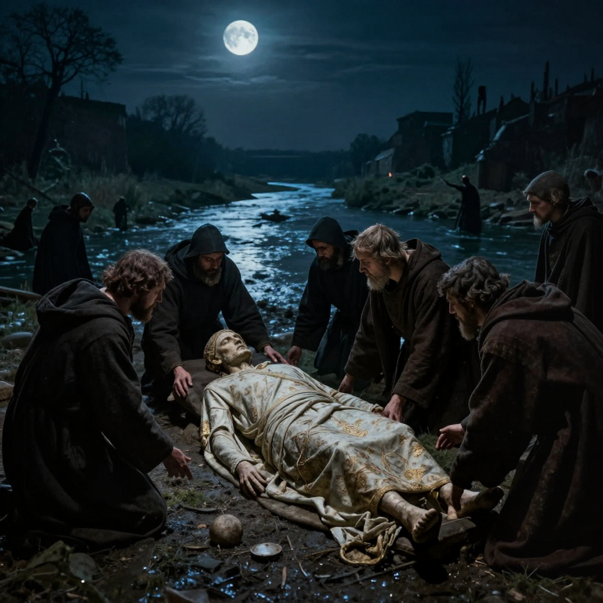

The Cadaver Synod

Imagine putting a dead person on trial. Sounds impossible, right? But in the year 897 AD, that's exactly what happened in Rome. A pope who had been dead for months was dug up from his grave, dressed in his papal robes, placed on a throne, and put on trial! This bizarre event is known as the "Cadaver Synod" - the trial of a corpse.
Who Was Pope Formosus?
Pope Formosus was a respected religious leader who served as pope from 891 to 896 AD. He was known for being intelligent and politically skilled. Before becoming pope, he had been a successful diplomat and had helped convert Bulgaria to Christianity.
But in the chaotic world of medieval Italian politics, having powerful enemies was dangerous. Formosus had made enemies among the Roman aristocracy - powerful noble families who wanted to control the papacy for their own gain.
⛪ Fun Fact: During this period of history, the papacy was incredibly unstable. Between 872 and 965 AD, there were 24 different popes - some lasting only a few weeks!
Why Was He Put on Trial?
After Formosus died in 896 AD, a new pope named Stephen VI took power. Stephen was allied with the enemies of Formosus - particularly a powerful Roman family called the Spoleto clan.
Stephen VI had a crazy idea: if he could prove that Formosus had been an illegal pope, then all of Formosus's decisions could be cancelled. This would help Stephen's allies keep power and eliminate their enemies.

Medieval Roman politics was a dangerous game of alliances and betrayals
But there was a problem: Formosus was already dead. How do you put a corpse on trial? Stephen VI decided to do the unthinkable - he would dig up Formosus's body and make it "stand trial."
⚖️ Fun Fact: The word "synod" means a church council or meeting. The "Cadaver Synod" literally means "the corpse council!"
The Bizarre Trial
In January 897 AD, Pope Stephen VI ordered Formosus's body to be exhumed from its grave. The corpse had been buried for about seven months. Workers dressed the decomposing body in full papal robes and placed it on a throne in a Roman basilica.
Stephen VI himself served as the judge. A deacon was appointed to "speak for" the dead pope - essentially answering charges by nodding or moving the corpse's head. It was a grotesque spectacle that shocked even medieval observers!
The charges against Formosus were that he had violated church laws and shouldn't have become pope. Of course, the "trial" was a sham - the verdict was decided before it even began.
The Horrifying Verdict
Not surprisingly, the corpse was found "guilty." Stephen VI pronounced a terrible sentence:
- All of Formosus's acts as pope were declared invalid
- The corpse was stripped of its papal robes
- Three fingers (used for blessings) were cut off the body
- The body was thrown into the Tiber River!

According to legend, the body washed ashore and was secretly retrieved by monks
🌊 Fun Fact: Medieval chroniclers claimed that Formosus's body performed miracles after being thrown in the river - suggesting that God was angry about how the dead pope had been treated!
The Backlash
Stephen VI's macabre trial backfired spectacularly. People throughout Rome were horrified by what they had witnessed. How could a pope treat a predecessor's body so disrespectfully?
Within months, Stephen VI was overthrown and thrown into prison, where he was strangled to death. Later popes reversed all of Stephen's decisions and restored Formosus's good name. The body was recovered from the river (according to legend, it washed ashore and was found by monks) and given a proper burial.
Why Did This Happen?
The Cadaver Synod reveals how chaotic medieval politics had become. During this period:
- Pope positions were bought and sold - wealthy families used bribery to get their candidates elected
- Violence was common - several popes were murdered during this era
- Rival factions fought for control - Italian noble families constantly battled for power
The Cadaver Synod was an extreme example of how far these political battles could go. Even the dead weren't safe from medieval power struggles!
📜 Fun Fact: This dark period is sometimes called the "Pornocracy" or "Rule of Harlots" by historians - though modern scholars think this name is unfair exaggeration!
What We've Learned
- Politics can drive people to do terrible things - even desecrating graves
- Extreme actions often backfire - Stephen VI's cruelty led to his own destruction
- History is full of strange true stories - truth really is stranger than fiction
- The medieval church was very different from today's religious institutions
The Cadaver Synod remains one of the most bizarre episodes in history. A corpse put on trial, dressed in robes, and thrown into a river - and it all really happened! This strange tale reminds us that truth can be far stranger than fiction, and that even in "civilized" societies, politics can drive people to do horrible things.
← Back to Interesting History